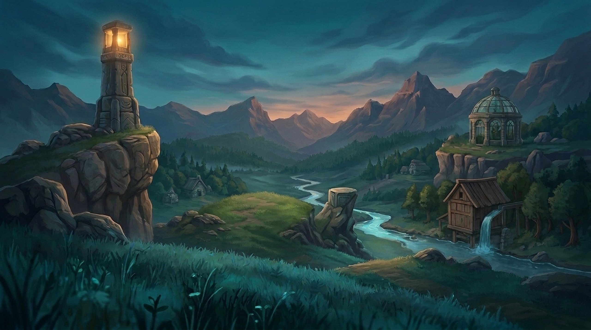
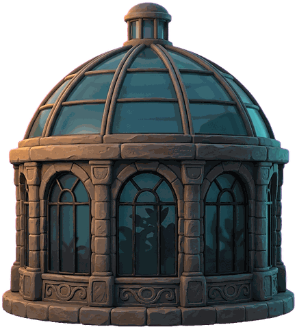
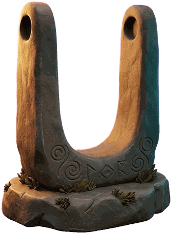
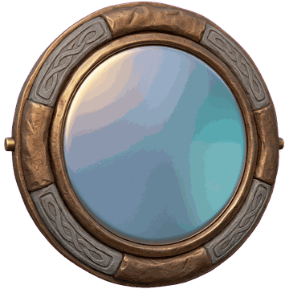
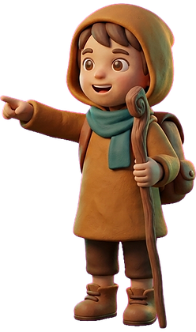
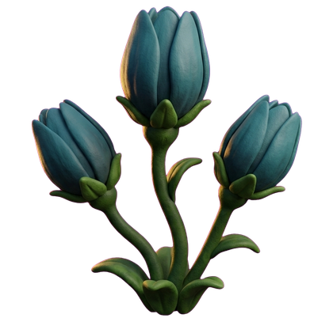
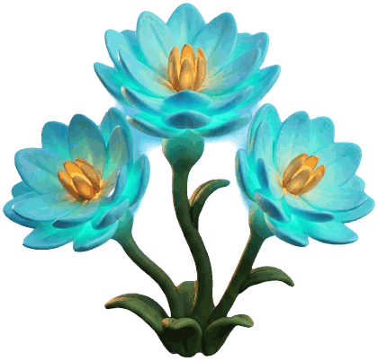
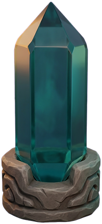
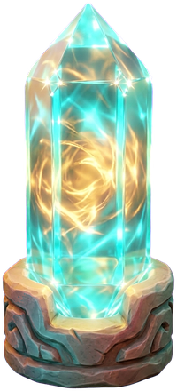
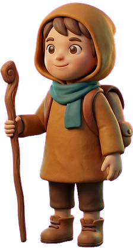

מסירה 1 (לפני כתיבת קוד המשחק): הרקע (
bg.jpg, 2560×1429) נקי ממראה, גביש, גלגל טחנה, דמות וקרניים. קרן השמש הזהובה פוגעת בדיוק במרכז זכוכית המראה (מעל המעמד והמסגרת) עם הבזק אור קטן, והמראה מסתובבת באופן ברור על הצירים שלה. כל קרן שיוצאת מהגביש היא תמיד בצבע טורקיז בהיר. בכל שלב אפשר לעבור בין תחילת סיבוב (החמצה שדועכת על הסלעים) לבין תשובה נכונה.
שלב 1 — מראה (Mirror)
רעיון אחד: כיוון מראה אחת אל יעד אחד
לפטופ (1280×800) — מסך מלא
המראה מסתובבת על הצירים אל החממה










טלפון לאורך (390×844)
מראה + חממה יחד במסך
🔊 הילד שומע: ״כוונו את המראה כדי להאיר את החממה!״ (ובסיבובים אחרים: ״כוונו את המראה אל טחנת המים!״)
שלב 2 — גביש (Crystal)
רעיון אחד: שליחת הקרן דרך הגביש אל היעד
לפטופ (1280×800) — הקרן עוברת דרך הגביש אל טחנת המים
גלגל הטחנה נשאר חד ומסתובב כשהאור מגיע



טלפון לאורך (390×844)
מראה, גביש וטחנה יחד
🔊 הילד שומע: ״סובבו את הגביש הזוהר כדי לשלוח את האור אל טחנת המים!״
שלב 3 — שני יעדים (Two Places)
רעיון אחד: פיצול האור בגביש לשני היעדים יחד (תמיד בצבע טורקיז)
לפטופ (1280×800) — הגביש מפצל את הקרן לשני המקומות יחד
שתי הזרועות מהגביש בטורקיז אחיד
טלפון לאורך (390×844)
מראה, גביש ושני היעדים במסך
🔊 הילד שומע: ״פצלו את האור בגביש כדי להאיר גם את החממה וגם את טחנת המים!״
שלב 4 — כל העמק (The Whole Valley)
שילוב של שלושת השלבים — משימה אקראית בכל סיבוב
לפטופ (1280×800) — כיוון המראה והגביש יחד
בתחילת הסיבוב הקרן פוגעת בזכוכית ומוחזרת אל הסלעים
טלפון לאורך (390×844)
מראה, גביש וכל היעדים במסך
🔊 הילד שומע: ״כוונו את המראה ואת הגביש כדי להאיר את כל העמק!״
עטיפת המשחק (cover.jpg · 800×800) והרקע הנקי (bg.jpg · 2560×1429)
ללא טקסט · מורכב מאמנות המשחק עצמו
כל חיתוכי ה-PNG השקופים (בדיקת שוליים על רקע כהה ובהיר)
12 קובצי PNG · כולם מתחת ל-150 KB · גודל 2×